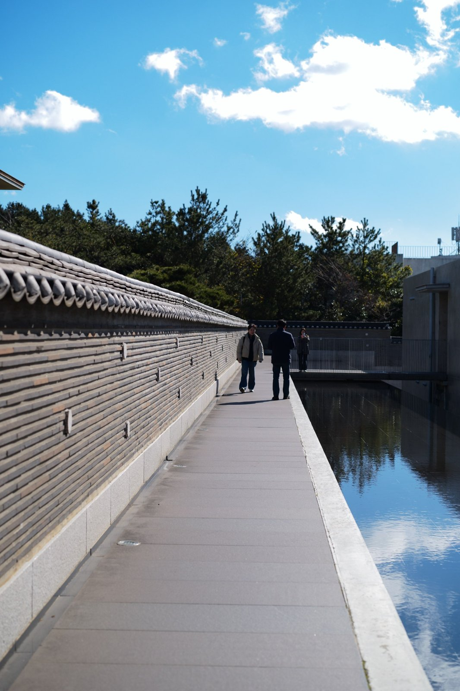
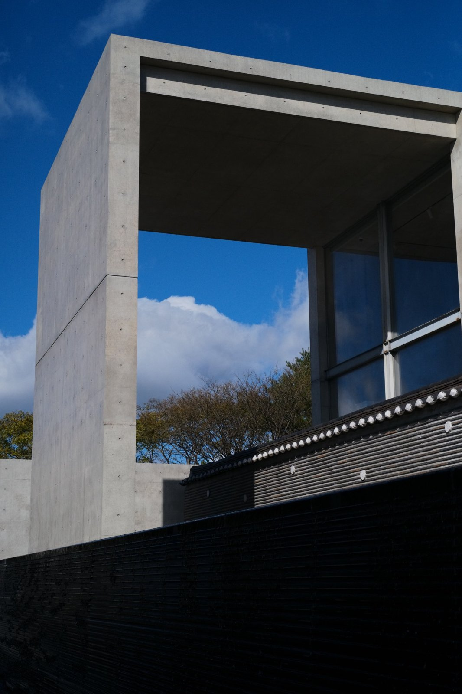
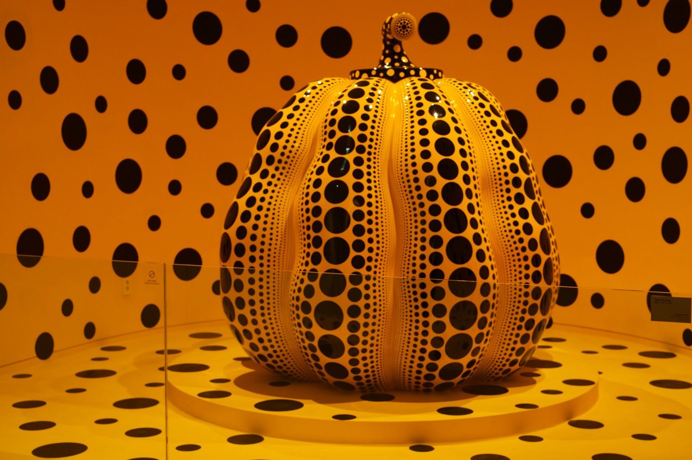

2026.11.22
Dots Accumulate, Consensus Follows
Yayoi Kusama's pumpkin and Infinity Mirror Room at the Bonte Museum. Consensus confirms value, but it cannot invent it.
This is an automatic translation of the Korean original.
Bonte, Joining Past and Present
On the mountainside in Andeok, Seogwipo, my first impression of the Bonte Museum was continuity. Tadao Ando built the building from exposed concrete, yet what it holds is the crafts of the Joseon era. He had to embrace the oldest things in the most modern material, so he must have agonized a great deal before finding its center.


The answer to that agony lay in the path leading into Hall 1. A tiled wall continues along the concrete wall, and during the few steps I walked beside it, time ran backward. The very process of entering was a journey back in time.


And in Hall 3 is Yayoi Kusama. Two works that have kept watch here since 2014: "Pumpkin" (2013) and "Infinity Mirrored Room: Brilliance of the Souls" (2008). In this building where old and new meet, she shows another kind of time.

She passed away this August, at the age of 97. So this time I stood before them with a slightly different question. Where does the value of these works come from? Is it because people agreed that it is so?
The Pumpkin, an Accumulation of Work
Black dots run densely across the yellow body. The dots grow and shrink along the curved surface, giving the hard sculpture a volume like breath. The longer I looked, the more I realized that each dot is different.

The pumpkin was a memory of childhood for her. The pumpkin she first painted while growing up on a seed farm in Matsumoto kept reappearing, even after she passed through New York and returned to Tokyo. The pumpkin at Bonte is only one point on that long line.
So what I see before this pumpkin is not a single sculpture but accumulation. Dots piled layer upon layer, the time of one person who returned to the same motif for decades. Here, repetition is diligence before it is obsession.
That a work is rediscovered later means that something to be discovered was already there. Accumulation keeps growing even when no one is looking.
The Infinity Mirror Room, a Sensory Shock
I entered this room knowing almost nothing about it. When the door closes, darkness comes first, and soon the light of countless dots spreads endlessly in every direction. I cannot tell where the walls end.
My first feeling was that it was like a mother's womb. A place dark and cozy, without boundaries. The feast of endlessly spreading dots left my mind dazed for a moment, and in the meantime I slipped, without knowing it, into a selfless meditation.
The "self-obliteration" Kusama has spoken of all her life becomes here not a concept but a sensation of the body. Might this be how the world looked to her? It was a brief time, but I could stand in her place and imagine the world.
This room arrives before any explanation. As it did for me, who knew neither the artist nor the art-historical context, it offers the same experience to anyone who steps in for the first time. Sensory shock is a language that needs no consensus.
Step out of the door, and it is Ando's gray wall again. Fullness and emptiness face each other with a single door between them.

Consensus Confirms but Cannot Invent
In the New York of the 1960s, Kusama stood at the periphery. She returned to Japan in 1973, and from 1977 she stayed in a hospital by her own choice and commuted to a studio across the road. The world called her back only in the 1990s.
In between, the works did not change. What changed was the consensus of the people looking at them. Museums, critics, and collectors began to call her name in one voice, and prices rose following that voice.
Then is value consensus? Before the two works at Bonte, I answer that it is so only by half. Had consensus arisen out of thin air, it would one day have scattered back to the same place.
Two things came first, in the place where consensus would return. The accumulation of work built up over decades, and a sensory shock that reaches even someone seeing it for the first time. The pumpkin shows the former, the mirror room the latter.
Consensus confirms value but cannot invent it. The dots pile up alone, and consensus arrives late. Yayoi Kusama's life is the clearest example of that order.